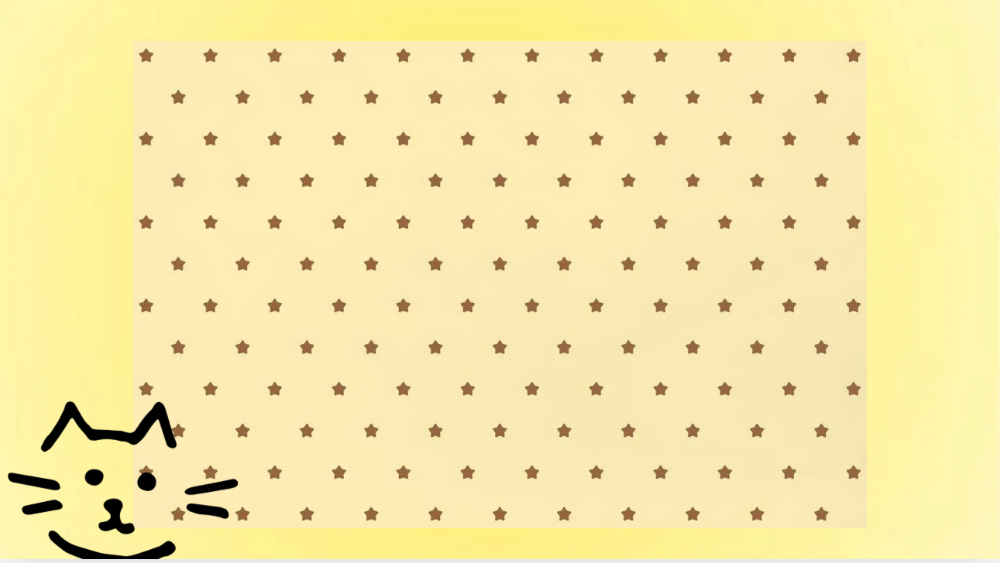

It still baffles me every night just by the thought of finally having someone like you in my life, and I hope that I can make you stay for the rest of it. Every night before I go to sleep after sending those good night/ good mornight texts to you I would play your favorite song on repeat, HEHE i'd like to think of it as my cherry on top after sucessfully talking to you throughout the day.
I KNOWW how OBVIOUS I have been from liking you, I mean— who wouldn't like someone as intresting as you? I know that you're not much of a talker even when it comes to texting, but the fact that you listen; is more than enough for me. I get why girls are attracted to you, I totally do, but I guess I'm just luckier than the rest of them because I get the chance to learn more about you HEHEHEHE (+points sa ego ko bleh :P), I hope that I can continue on learning new things that makes you who you are.